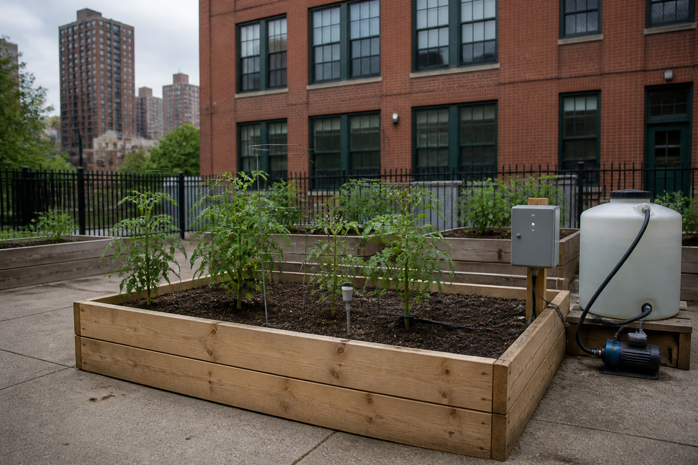

🎯 Ta mission : choisir la source d'énergie qui fera vivre seul le jardin du fond de la cour, vacances d'été comprises — grille de critères à l'appui, en disant ce que ce choix coûte.
🖥️ Ordinateur partagé (salle de techno, CDI) : un autre élève qui ouvre cette page sur la même session verra tes réponses.
Quand tu as fini : imprime en PDF si tu veux garder une trace, puis clique sur « 🗑 Effacer ma sauvegarde ».
| Code | Formulation officielle (programme 2024) | Où, dans cette séquence |
|---|---|---|
| 4e_C7.4 | Comparer différentes sources d'énergie pour choisir la plus adaptée. | Activités 0, 2, 3, 4 et REFAIRE |
| 4e_C3.1 (appui) | Identifier les caractéristiques à prendre en compte dans le choix d'un OST en vue de répondre à un besoin. | Activité 1 |
Référence normative : programme de technologie du cycle 4, BO n°9 du 29 février 2024. Codification opérationnelle : les codes 4e_C3.1 · 4e_C7.4 servent à ranger les séquences ; ils ne viennent pas du programme officiel.
Pour toi, sans note : coche ce qui est déjà en place. Sous chaque ligne, un lien pour le reprendre si tu n'en es pas sûr·e.
→ pas encore sûr·e ? relis « Comment l'énergie change-t-elle de forme dans l'indicateur ? » dans la synthèse 5e_C7.4
→ pas encore sûr·e ? relis « Une pile et un panneau se comparent-ils de la même façon ? » dans la synthèse 5e_C7.4
→ pas encore sûr·e ? relis la partie 1 de la synthèse 5e_C3.1 à C3.4, « Comment décrire un objet technique ? »
Dans cette séquence : le verbe du programme est comparer — et comparer, ce n'est pas regarder les cinq sources l'une après l'autre. C'est écrire des critères avant de regarder, puis les appliquer à toutes de la même façon.
📌 Sans grille, on ne compare pas : on préfère.
Un mot à garder en tête : un critère est une caractéristique qui distingue les candidats et qui compte pour le besoin.
Le jardin connecté marche. Le capteur lit l'humidité, la carte décide, le relais claque — on l'entend basculer, « clac », quand il ferme le circuit de la pompe —, la pompe arrose. Sur la paillasse, relié à l'ordinateur de la salle par son câble USB.
Le carré potager, lui, est au fond de la cour. Il faut que le jardin y vive seul — y compris pendant les vacances d'été, quand plus personne ne passe pendant deux mois.
« Alors ? demande le gestionnaire. Quelle source, et surtout : pourquoi celle-là plutôt qu'une autre ? »

🔎 « Le relais claque » : ce qui se passe dans le boîtier
Un relais, c'est un interrupteur que la carte actionne toute seule. La carte ne peut envoyer qu'un tout petit courant, bien trop faible pour faire tourner la pompe. Ce petit courant passe dans une bobine (un fil enroulé) : elle devient un aimant, attire une lame de métal, et la lame vient toucher un contact : le circuit de la pompe est fermé, la pompe tourne. Ce mouvement fait un petit bruit sec, « clac » : c'est ça, « le relais claque ». Quand la carte coupe l'ordre, un ressort relève la lame : « clac » encore, et la pompe s'arrête.
Comment comparer cinq sources d'énergie sans se contenter de celle qui nous plaît ?
Dans le jardin, qu'est-ce qui consomme le plus, d'après toi : la pompe, qui déplace de l'eau, ou la carte, qui ne fait que réfléchir ? Écris ton pari et ta raison.
On la reprendra au bilan. Personne ne la corrige : elle sert à mesurer le chemin parcouru.
Une question par ligne du bloc « Avant de commencer ». Elles ne sont pas notées et ne comptent pas dans ta progression : elles te disent quoi relire avant de te lancer. « Je ne sais pas encore » est une réponse utile.
Question directrice : qu'est-ce qui vide vraiment la source, et comment comparer cinq sources avec les mêmes critères ?
Au programme : l'ouverture, puis qui vide vraiment la source (activité 0, environ 15 min), écrire les critères avant de comparer (activité 1, environ 20 min) et remplir la grille de comparaison au banc (activité 2, environ 20 min).
Avant toute explication. Le banc compte l'énergie que le jardin consomme en une journée. Chaque ligne peut être éteinte : décoche-la, et regarde ce que devient le total. Éteins la pompe. Puis rallume-la et éteins la carte.
| Ce qui consomme | Courant (en milliampères) | Par jour | Énergie | |
|---|---|---|---|---|
| Carte Arduino UNO | 45 mA | 24 h | 5,400 Wh (wattheures) | |
| Capteur d'humidité du sol | 2 mA | 24 h | 0,240 Wh | |
| Écran LCD RGB | 40 mA | 1 h | 0,200 Wh | |
| Module relais | 70 mA | 1 min | 0,006 Wh | |
| Pompe immergée 5 V (volts) | 300 mA | 1 min | 0,025 Wh | |
| Consommation du montage, par jour | — | |||
| Énergie stockée dans la source | — |
|---|---|
| Rendement de la mise en 5 V (volts) | — |
| Énergie réellement disponible | — |
—
Courants moyens sous 5 V, valeurs constructeur usuelles. Le rendement d'un régulateur linéaire vaut Vsortie ÷ Ventrée — ce n'est pas un réglage, c'est de la physique : il dissipe la différence en chaleur. Ensoleillement retenu pour New York : 4,5 heures équivalent plein soleil par jour en moyenne annuelle (panneau fixe incliné de 20° plein sud), avec 30 % de pertes de chaîne. Source : NREL, PVWatts v8, base NSRDB, relevé par thegreenwatt.com.
🔒 Éteins d'abord la pompe, puis la carte, et regarde le total à chaque fois — c'est l'essai qui répond, pas l'intuition.
1 et 2 — la pompe ne pèse rien, la carte pèse tout. La pompe tire 300 mA, six fois plus que la carte… pendant 60 secondes par jour. La carte tire 45 mA pendant 24 heures. Le produit courant × durée écrase l'intuition :
| Ce qui consomme | Courant (en milliampères) | Par jour | Énergie (en wattheures) | Part |
|---|---|---|---|---|
| Carte Arduino UNO | 45 mA | 24 h | 5,400 Wh | 92,0 % |
| Capteur d'humidité | 2 mA | 24 h | 0,240 Wh | 4,1 % |
| Écran LCD RGB | 40 mA | 1 h | 0,200 Wh | 3,4 % |
| Pompe immergée | 300 mA | 60 s | 0,025 Wh | 0,4 % |
| Module relais | 70 mA | 60 s | 0,006 Wh | 0,1 % |
3 — la durée. Un courant seul ne dit rien. Ce qui vide une source, c'est courant × tension × durée. Un petit courant qui ne s'arrête jamais bat un gros courant qui dure une minute.
📌 Le coupable n'est presque jamais celui qui fait du bruit. Retiens-le : tu vas retrouver exactement ce raisonnement à l'activité 4, et il va changer la réponse de toute la séance.
Objectif : distinguer un critère d'une remarque. Compétence : 4e_C3.1. Production attendue : 8 décisions + une phrase.
Un critère, c'est une caractéristique qui distingue les candidats et qui compte pour le besoin. Huit propositions sont faites au conseil de classe. Pour chacune, dis si c'en est un — ici, pour ce jardin-là.
En une phrase : qu'est-ce qui fait qu'une caractéristique est un critère ici et pas ailleurs ?
Le niveau attendu est le même : ces phrases donnent le départ, pas la réponse.
L'autonomie : combien de temps le jardin tient sans que personne n'intervienne — c'est un critère utile ici
La couleur du boîtier de la source — ce n'est pas un critère : il ne distingue pas ou il ne compte pas ici
La disponibilité d'une prise à l'endroit exact du jardin — c'est un critère utile ici
Le coût sur une année entière, et pas seulement le prix d'achat — c'est un critère utile ici
La marque du fabricant de la pile — ce n'est pas un critère : il ne distingue pas ou il ne compte pas ici
Le déchet produit : ce qu'on jette, et à quelle fréquence — c'est un critère utile ici
Le poids de la source, alors que le jardin ne bouge jamais — ce n'est pas un critère : il ne distingue pas ou il ne compte pas ici
La sécurité : ce que l'élève manipule reste-t-il en très basse tension — c'est un critère utile ici
📌 Le poids est le cas intéressant. C'est une vraie caractéristique, elle est mesurable, elle distingue parfaitement les cinq sources — et elle ne sert à rien : le jardin ne bouge jamais. Un critère n'est pas une propriété de la source, c'est une propriété du besoin. Sur un objet porté à la main, le poids redeviendrait le premier critère.
Objectif : appliquer les mêmes critères à toutes les sources. Compétence : 4e_C7.4. Production attendue : 5 verdicts + 1 calcul.
Remonte au banc, toutes les lignes rallumées, et passe les cinq sources. Pour chacune, dis ce que le banc conclut.
Les réponses possibles — choisis une lettre pour chaque ligne :
Le calcul qui fait mal. La pile 9 V tient environ 11 heures. Le jardin doit vivre seul pendant les 60 jours de l'été. Combien faudrait-il de piles 9 V ?
🔒 Passe les cinq sources au banc : une grille se remplit avec des relevés, pas avec des souvenirs.
Pile 9 V alcaline — moins d'un jour
4 piles AA alcalines — un peu plus de deux jours
Accu Li-ion 18650 rechargeable — un jour et demi, puis il faut le recharger
Secteur — adaptateur USB scellé — illimitée, tant qu'il y a du réseau
Panneau solaire 1 W crête + accu — elle ne suffit pas : il manque de l'énergie chaque jour
Le calcul : 60 jours font 1 440 heures ; 1 440 ÷ 11 = 131 piles. À 3,50 € l'unité, cela fait 459 € de piles pour arroser des tomates pendant deux mois — et 131 piles à porter au bac de collecte.
📌 Ce nombre ne sort pas d'une opinion sur les piles : il sort d'une autonomie relevée et d'une durée donnée par le besoin. C'est ça, comparer.
Question directrice : aucune source ne gagne sur tous les critères : laquelle choisir — et faut-il changer la source, ou la charge ?
Au programme : trancher, et assumer ce qu'on écarte (activité 3, environ 20 min), changer la charge plutôt que la source (activité 4, environ 15 min), le réinvestissement sur le toit-terrasse (environ 10 min), puis la synthèse, le Bonus, le bilan et le renvoi vers le QCM.
⚠️ Avec le matériel : côté élève, il n'y a que du 5 V (volts) — le « secteur », c'est l'adaptateur USB fermé, qu'on n'ouvre pas — et une pile ou un accu ne se met jamais en court-circuit. L'encadré complet est dans le rappel, en haut de page.
Objectif : choisir avec une grille sous les yeux. Compétence : 4e_C7.4. Production attendue : 3 réponses + une justification.
Ta recommandation, en trois phrases. Nomme la source, cite deux chiffres de ta grille, et dis franchement ce que ton choix coûte — car aucune source n'est bonne sur tous les critères.
Le niveau attendu est le même : ces phrases donnent le départ, pas la réponse.
1 — le secteur. Sur ce seul critère, la question ne se pose même pas : illimitée bat n'importe quel nombre de jours.
2 — la prise n'existe pas là-bas. Une source parfaite qu'on ne peut pas amener n'est pas une source. 400 € de tranchée pour un jardin pédagogique, le gestionnaire dira non — et il aura raison.
3 — il manque 2,67 Wh par jour. 5,87 − 3,20. Ce n'est pas « un peu » : c'est 45 % du besoin, tous les jours, et un manque quotidien vide l'accu en quelques jours, quelle que soit sa taille.
📌 Aucune source ne gagne sur tous les critères, et c'est normal : si l'une gagnait partout, il n'y aurait rien à comparer. Une bonne recommandation dit donc toujours deux choses — ce qu'on choisit, et ce que ce choix coûte. Ici : le panneau 2 W (6,3 Wh/jour) tient le besoin, de peu, pour 15 € et zéro déchet annuel, mais il faut le fixer, l'orienter et le nettoyer. Le secteur ne demande rien… sauf 400 € de tranchée. Les deux réponses se défendent, à condition de dire le prix de la sienne.
Objectif : découvrir que comparer les sources finit par obliger à regarder la charge. Compétence : 4e_C7.4. Production attendue : 1 calcul + 1 réponse + 1 phrase.
Retour à l'activité 0 : la carte pèse 92 %. Une carte de mesure moderne peut se mettre en veille profonde entre deux lectures et ne consommer, en moyenne, que 5 mA (milliampères) au lieu de 45.
Fais le calcul au banc : éteins la ligne de la carte, lis le total qui reste, puis ajoute ce que consommerait la carte à faible consommation — 5 mA sous 5 V (volts) pendant 24 h, soit 0,60 Wh (wattheures).
1. Le nouveau total de consommation, par jour :
En une phrase : qu'est-ce qui a changé dans le problème ?
Le niveau attendu est le même : ces phrases donnent le départ, pas la réponse.
1 — 1,07 Wh par jour. Sans la carte, le banc affiche 0,47 Wh ; la carte à faible consommation en ajoute 0,60. Total : 1,07 Wh, contre 5,87 avant. On a divisé la consommation par 5,5 en changeant une pièce.
2 — le panneau suffit largement : 3,2 Wh récoltés pour 1,07 consommés, soit près du triple. La source qui perdait toutes les comparaisons devient la meilleure, et elle ne demande ni tranchée ni pile.
📌 On croyait choisir une source ; on a changé le problème. Agrandir le panneau, c'était payer pour du gaspillage. Devant un manque d'énergie, le premier réflexe d'un technicien n'est pas « quelle source plus grosse » mais « pourquoi ça consomme autant ».
Une précision honnête, parce que la carte de l'atelier est une UNO : une UNO ne descend pas à 5 mA. Sa DEL d'alimentation, son composant USB et son régulateur tirent près de 30 mA même quand le programme dort. Ce n'est pas le programme qu'il faut changer, c'est la carte — et ça, c'est une décision de conception, pas de programmation.
Le collège déplace le jardin sur le toit-terrasse de l'annexe : plein soleil toute la journée, et une prise à deux mètres. Le montage ne change pas.
Ta grille de comparaison change-t-elle ? Et ta conclusion ? Dis ce qui bouge, ce qui ne bouge pas, et pourquoi.
Le niveau attendu est le même : ces phrases donnent le départ, pas la réponse.
Les critères ne bougent pas — autonomie, prise disponible, coût annuel, déchet, sécurité. Ce sont les mêmes cinq, et c'est le signe qu'ils étaient bien choisis : une grille qu'il faut refaire à chaque situation n'était pas une grille.
Deux cases changent, et elles suffisent à retourner la conclusion : la prise est à deux mètres, et le soleil est plein. Le secteur redevient possible sans 400 € de tranchée, et le panneau devient franchement bon.
La meilleure réponse est celle qui combine : panneau + accu pour l'autonomie, et l'adaptateur secteur en secours quand il pleut trois jours. On n'est pas obligé de choisir une seule source — encore faut-il l'avoir écrit dans la grille.
Un piège à ne pas manquer : sur un toit-terrasse à New York, il y a le soleil, mais aussi le gel, la neige et le vent. Le panneau tient ; les piles alcalines, elles, perdent une bonne part de leur capacité quand il gèle, et un accu Li-ion ne doit pas être chargé sous 0 °C. Encore un critère que le banc ne compte pas.
💰 Défi coût réel : compare, sur quatre années scolaires, le coût total des quatre piles AA (4,00 € le jeu, 2,1 jours d'autonomie) et celui du panneau 2 W (watts) — 15 €, plus un accu à 8 € tous les trois ans. À partir de quel mois le panneau devient-il moins cher ?
🔍 Défi mesure : avec un multimètre en série, mesure le courant réel de ta carte au repos. Est-il de 45 mA (milliampères) ? Écris l'écart, et une raison possible.
❄ Défi hiver : le banc compte 4,5 heures d'équivalent plein soleil en moyenne annuelle. Cherche ce que devient ce chiffre en décembre à New York, et dis de combien il faudrait grossir l'accu ou le panneau pour passer une semaine de décembre.
Le niveau attendu est le même : ces phrases donnent le départ, pas la réponse.
On compte les achats. Le jardin tourne toute l'année, été compris : quatre années, c'est 4 × 365 = 1 460 jours. Un jeu de quatre piles AA dure 2,1 jours : il en faut 1 460 ÷ 2,1 ≈ 695,2, donc 696 jeux, soit 696 × 4,00 = 2 784 €. Le panneau 2 W (watts) coûte 15 €, plus un accu à 8 € au départ et un autre au bout de trois ans : 15 + 8 + 8 = 31 €.
Le panneau devient moins cher dès le premier mois. Au départ, le panneau et son accu coûtent 23 €, un jeu de piles 4 €. Mais on rachète des piles tous les 2,1 jours : le sixième jeu, acheté le onzième jour, porte la dépense à 24 €. Dès ce jour-là, le panneau a coûté moins cher ; à la fin du premier mois, les piles en sont à 15 jeux, soit 60 €.
Ce que ce calcul ne dit pas. Il suppose que le panneau suffit chaque jour : c'est vrai en moyenne sur l'année (6,3 Wh, des wattheures, récoltés pour 5,87 Wh consommés), pas en décembre — c'est le défi hiver. Et 696 jeux, ce sont 2 784 piles à rapporter au bac de collecte.
Attendus : le nombre de jours ; le nombre de jeux, arrondi au jeu supérieur ; les deux totaux ; le moment où le panneau passe devant ; une limite du calcul.
Erreurs typiques : comparer 4 € et 15 €, des prix d'achat ; oublier l'accu, ou ne le compter qu'une fois ; ne compter que les jours de classe, alors que le jardin vit aussi l'été ; arrondir 695,2 à 695 jeux — le dernier jour, le jardin resterait sans piles.
Comment mesurer. Le multimètre se règle en ampèremètre, sur le calibre des milliampères, et se branche en série : on ouvre le fil + qui alimente la carte et le courant traverse l'appareil. Jamais en parallèle sur l'alimentation : l'ampèremètre ferait un court-circuit et son fusible fondrait. On ne mesure que du côté 5 V (volts), en très basse tension.
Ce qu'on peut trouver. Personne ne peut écrire ta valeur à ta place : c'est ta mesure qui fait foi. Le banc compte 45 mA (milliampères), une valeur constructeur usuelle pour une carte UNO, DEL d'alimentation et régulateur compris. Un écart de quelques milliampères, dans un sens ou dans l'autre, est normal. Écris-le ainsi : « j'ai mesuré … mA, soit … mA de plus (ou de moins) que les 45 mA du banc ».
Raisons possibles d'un écart : ce qui est branché en même temps (l'écran et son rétroéclairage, le capteur) ; la façon d'alimenter la carte (par l'USB, ou par une pile à travers le régulateur, qui consomme lui aussi) ; le modèle exact de la carte (une copie n'a pas toujours les mêmes composants) ; le programme qui tourne (une DEL qui clignote) ; la précision du multimètre sur ce calibre.
Attendus : le branchement en série ; la valeur mesurée, avec son unité ; l'écart chiffré par rapport aux 45 mA ; une raison qui s'appuie sur ce qui était branché pendant la mesure.
Erreurs typiques : brancher l'ampèremètre en parallèle ; rester sur le calibre des ampères (l'appareil affiche 0,04 et l'on croit qu'il n'y a rien) ; mesurer pendant que la pompe tourne — ce n'est plus « au repos » ; confondre le milliampère, un courant, et le milliampère-heure, une capacité.
Le chiffre de décembre. À New York, en décembre, un panneau fixe incliné ne reçoit plus qu'environ 2,4 heures équivalent plein soleil par jour, au lieu de 4,5 en moyenne sur l'année : presque deux fois moins. C'est la valeur que donnent les données d'ensoleillement utilisées par le banc.
Le calcul, avec le panneau 2 W (watts) de la recommandation. Récolte : 2 × 2,4 × 70 % ≈ 3,4 Wh (wattheures) par jour. Besoin : 5,87 Wh par jour. Il manque environ 2,5 Wh chaque jour, soit 7 × 2,51 ≈ 17,6 Wh sur une semaine.
Grossir l'accu : il doit donner, à lui seul, les 17,6 Wh qui manquent. Un accu 18650 rend 9,4 Wh : il en faut deux (18,8 Wh) — l'accu double. Mais il ne fait que repousser la panne : en décembre, le panneau ne le recharge jamais complètement, et la semaine suivante repart à vide.
Grossir le panneau : pour récolter 5,87 Wh par jour avec 2,4 h et 70 %, il faut 5,87 ÷ (2,4 × 0,7) = 5,87 ÷ 1,68 ≈ 3,5 W crête, un panneau environ 1,75 fois plus grand que le 2 W (et 3,5 fois le 1 W du banc). C'est la solution qui tient tout l'hiver.
Et l'activité 4 ? Avec la carte à faible consommation, le jardin ne demande plus que 1,07 Wh par jour : même le panneau 1 W du banc en récolte 1 × 2,4 × 0,7 ≈ 1,7 Wh en décembre. Changer la charge règle aussi l'hiver.
Attendus : le chiffre de décembre, environ 2,4 h ; la récolte recalculée avec le même rendement de 70 % ; le manque par jour, puis sur sept jours ; une taille d'accu ou de panneau, chiffrée ; la différence entre repousser la panne (l'accu) et la supprimer (le panneau, ou la charge).
Erreurs typiques : garder 4,5 h en décembre ; oublier le rendement de 70 % ; confondre les watts, une puissance, et les wattheures, une énergie ; croire qu'un plus gros accu suffit pour tout l'hiver ; oublier qu'un accu Li-ion ne se charge pas sous 0 °C — encore un critère que le banc ne compte pas.
🔙 Ton idée de départ : —
Tu avais parié sur la pompe ou sur la carte. Le banc a tranché en trois clics. Ce qui compte n'est pas d'avoir eu raison : c'est de savoir pourquoi l'intuition se trompait — et de pouvoir refaire le raisonnement sur un autre objet.
Le niveau attendu est le même : ces phrases donnent le départ, pas la réponse.
Comment j'ai travaillé :
Le niveau attendu est le même : ces phrases donnent le départ, pas la réponse.
Les quatre niveaux sont ceux du livret scolaire :
maîtrise insuffisante · maîtrise fragile · maîtrise satisfaisante · très bonne maîtrise.
Aucun n'est une note : choisis celui qui décrit ce que tu fais aujourd'hui.
30 questions — chaque mauvaise réponse est réfutée une par une — sur les critères, le produit courant × durée, la grille de comparaison, le coût sur une durée et ce qu'aucune source ne gagne.
🚀 Ouvrir le QCM d'entraînement